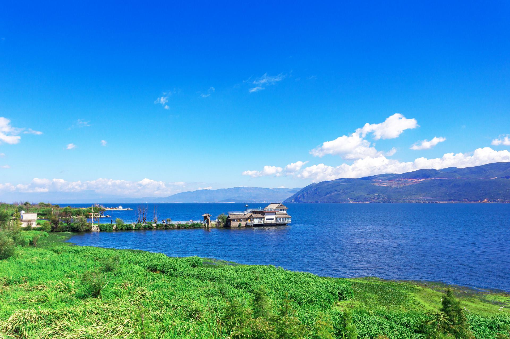

玉龙雪山

丽江古城


丽江古城内的街道依山傍水修建，以红色角砾岩铺就，是中国以整座古城申报世界文化遗产获得成功的两座古城之一。丽江古城体现了中国古代城市建设的成就，是中国民居中具有鲜明特色和风格的类型。
以水为核心的丽江古城因水的活用而呈现特有的水巷空间布局。桥梁密集是丽江古城最大的特色。
丽江古城历史悠久，兼有水乡之容、山城之貌，从城市总体布局到工程、建筑融汉、白、彝、藏各民族精华，自具纳西族独特风采。
洱海
洱海，在古代有“叶榆水”、“叶榆河”、“叶榆泽”、“西洱河”、“洱河”、“昆弥川”等名称。洱海之所以最终以“洱”为名，要么说它“形若人耳”，要么说它“如月抱珥”，因而得名。
在云南十八怪中就有一怪为“湖泊称作海”。这就是说，湖泊在云南多被叫做“海”。
洱海水生动物资源丰富，其中有鱼类8科20属33种，其中土著鱼17种，8种为洱海特有种，洱海特有的大理裂腹鱼（大理弓鱼）、洱海鲤为国家二级重点保护鱼类，大理鲤、春鲤为云南省二级保护动物。
旅行的意义
步步寻往迹
有处特依依
智者乐水
仁者乐山
- 
身体和灵魂
总有一个要在路上
安静的心
与不停的脚步
旅行的深度
决定回味的长度
旅行越偏远
离自己越近
Tao Chen Lanston 陈涛